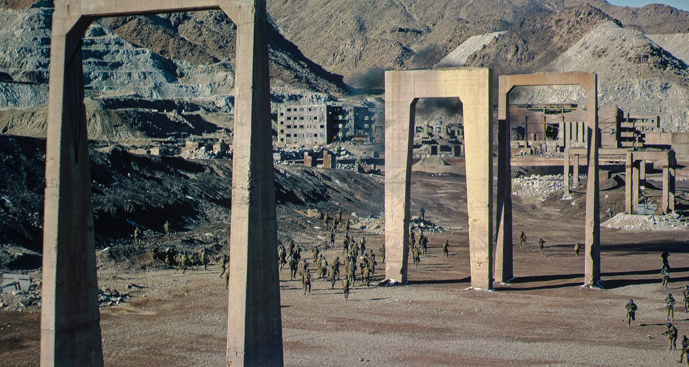
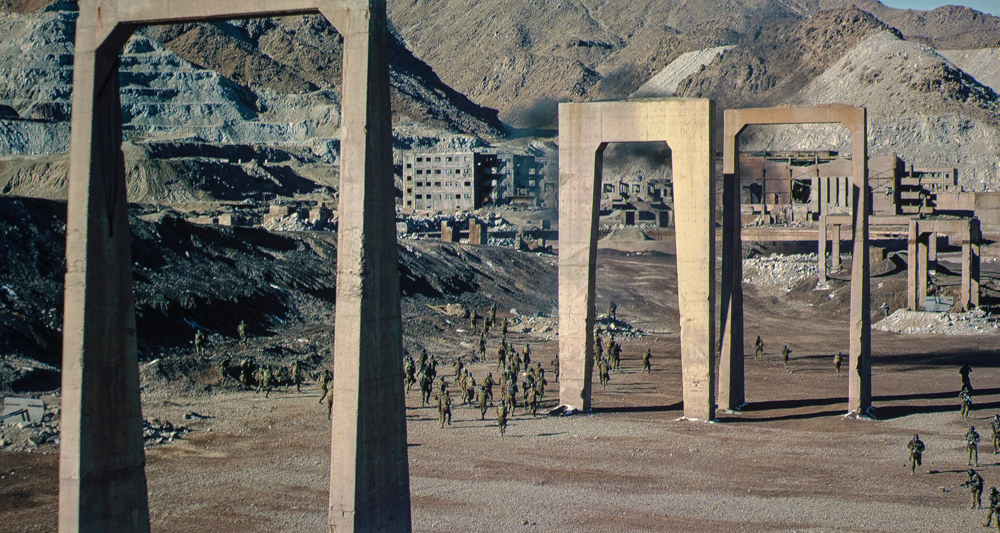

Tenet is a bold, mind-bending thriller that redefines the boundaries of time and storytelling.
Tenet is a mind-bending sci-fi thriller directed by Christopher Nolan that delves into the manipulation of time. The film follows a protagonist (John David Washington), a CIA agent recruited by a mysterious organization known as Tenet, tasked with preventing a global catastrophe. Armed with the knowledge of "inversion"—a concept that allows objects and people to move backward through time—he embarks on a mission across the globe, facing challenges that bend the laws of physics and perception. With explosive action, complex time loops, and a high-stakes narrative, Tenet keeps audiences on the edge of their seats, questioning the very nature of time and reality.

 
